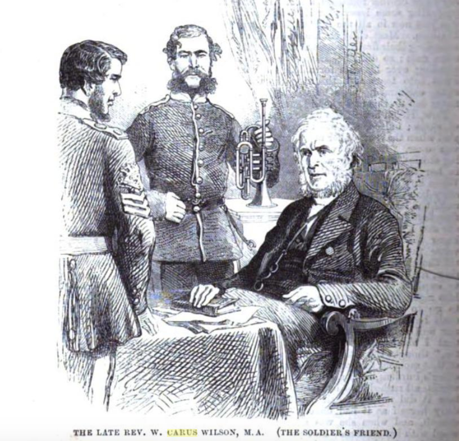

The Final Year#
As we enter 1850, the name of the Revd. W. Carus Wilson is no longer such a common fixture in the local and regional press.
One mention we do find depicts him to be in a somewhat curmudgeonly frame of mind.
The astonishment of the Board at so uncourteous a letter, February 1859
Isle of Wight Observer - Saturday 12 February 1859
VENTNOR
COMMISSIONERS’ MEETING.
The usual monthly meeting of the above-named body took place on Monday evening last. Present—Messrs. W. Bush (chairman), J. B. Martin, J. Jewell, W. Bull, J. Wale, G. Mundell, H. Wicker, F. Fisher, F. Moore, and F. Trueman.
It was moved by Mr. Martin, seconded by Mr. Fishes, and carried, “that the offer of a piece of freehold land for the purposes of a police station for £110 by Mr. Rayner be accepted.”
The following letters were received and read by the clerk:—One from Mr. Bailey, of Florence-villa, asking for more lights on the Esplanade; to which the clerk was ordered to return an answer, to the effect that the matter should be considered. The next was from the Rev. Carus Wilson, of which we give a verbatim copy:
“Mr. Carus Wilson presents his compliments to the Ventnor Improvement Commissioners, and has to request that they will not allow their agent, Rayner, come to Eglinton-house on any business connected with the Board. Mr. Carus Wilson is only astonished that the Commissioners can continue to employ him, and must regard his being sent into the houses of ratepayers as an insult to their moral feelings and highly discreditable to the Commissioners.”
After some discussion the clerk was requested to acknowledge the receipt of the letter, and to express the astonishment of the Board at so uncourteous a letter being sent to a public body.
Later that year, a death notice appears for his printer in Ventnor, Mr. Thomas Butler.
With painful feelings, October 1859
Isle of Wight Observer - Saturday 15 October 1859
Ventnor
With painful feelings we have to record another melancholy instance of the uncertain tenure of human life, which has cast a gloom over the whole neighbourhood. It took place on Wednesday afternoon last, when Mr. Thomas Butler, stationer and printer, was taken suddenly ill, and in fifteen minutes was a lifeless corpse; the cause of death, it is said, being an affection of the heart. The deceased was a widower, and leaves three young children orphans. He was one of the oldest inhabitants of this place, and was much respected by a large circle of friends; and in his business capacity was the printer and publisher of the Rev. Carus Wilson’s tracts on various subjects, a large quantity of which was forwarded by each mail to India for the use of our soldiers.
On Wednesday deluging rain passed over the centre of the island from west to east—Freshwater, Godshill, Newport, Arreton, and Ryde—for some hours during the day; whilst at Ventnor and the Undercliff no rain fell, but the sun was shining the whole of the day.
In November, 1859, W. Carus Wilson’s wife of almost fifty years died at her home in Ventnor,
At Eglinton House, Ventnor, November 1859
Hampshire Telegraph - Saturday 19 November 1859
DEATHS
Carus-Wilson—On the 15th inst., at Eglinton House, Ventnor, Anne, wife of the Rev. W. Carus-Wilson, of Casterton Hall, Westmoreland, aped 73.
The Isle of Wight Observer offers a different date — and gets the name wrong.
On the 11th inst., at Ventnor, November 1859
Isle of Wight Observer - Saturday 19 November 1859
DIED.
On the 11th inst., at Ventnor, Mary, wife of the Rev. Carus Wilson, aged 70 years.
And then, as so often happens with couples that have lived closely together, and nursed each other through old age, Revd. W. W. Carus Wilson died, at the very end of the year, in London, just six weeks after the death of his own dear wife.
On the 30th ult., January 1860
Isle of Wight Observer - Saturday 07 January 1860
Died.
On the 30th ult., at 20, Montague-place, Russell-square, the Rev. William Carus Wilson, aged 68 years, six weeks after the death of his beloved wife.
At 20, Montagu-place, Russell-square, January 1860
Hampshire Telegraph - Saturday 07 January 1860
DEATHS
WILSON— On the 30th ult., at 20, Montagu-place, Russell-square, the Rev. William Carus Wilson, aged 68, six it weeks after the death of his wife.
 THE LATE REV. W. CARUS WILSON, MA. (THE SOLDIER’S FRIEND)
A fitting epitaph honoring his works appeared shortly after, reprinted from the Dublin Daily Express.
A venerable servant of God, January 1860
Portsmouth Times and Naval Gazette - Saturday 21 January 1860
THE LATE REV. CARUS WILSON
The above venerable servant of God has entered his rest. He was born in 1792 and was eldest son of W. W. Carus Wilson, Esq., who was M.P. for Cockermouth, and for upwards of half a century a magistrate for three counties in the north of England. For some years he had been in a declining state of health, and obliged live far away from his lovely residence in Westmoreland, Casterton Hall, where often resorted some of the best men of the past and present generation; there have played their boyhood, when on a visit with their parents, the late Lord MacCaulay, the sons of Wilberforce, and many others of high name. The Rev. W. Carus Wilson had the singular felicity of embodying, if not anticipating in his various plans of benevolence, the leading ideas of the age, and his name has long been a household word in every Christian family. In church building, in the diffusion of a cheap Christian literature, and in education, his exertions for a half a century have earned him the blessings of rich and poor. The important church patronage of which Simeon of Cambridge vested in the hands of Mr W. Carus Wilson and three other trustees, as also other churches by others intrusted to him (the building of many which he was chiefly instrumental in), have all been powerful engines for the spread of Evangelical truth. He brought the first penny periodicals that ever appeared in England—“The Friendly Visitor” and “Children’s Friend,” and afterwards edited the “Christian Guardian” and “Teachers’ Visitor.” For many years 50,000 copies of these were printed every month. He was thus the father of the cheap religions literature of the day, and blessed results have, indeed, been produced by these in thousands of British homes.
His efforts in the cause of education are chiefly identified with the Clergy Daughters’ School, and the School for training Servants and Schoolmistress’, at Casterton. From the former sprang similar institutions at Brighton, Bristol, and elsewhere. During the forty years, or more, since it was established by him, it has been the greatest boon to a large number of the clergy, whose daughters are boarded, clothed, and educated there for £11 a-year. Governesses’ situatious are found for the girls on leaving; so that there is the two-fold advantage conferred on a clergyman——a sound and cheap education, and future provision for his daughters. In the Servants’ School more than 100 poor girls are supported for £10 a-year each. These schools, containing more than 250 girls, are overflowing. They require nearly £1,OOO a-year in voluntary contributions. The late Queen Dowager, after her visit to Casterton, was a warm supporter of these institutions, and often consulted Mr. Wilson in the disposal of some of her charities. At the time of the Irish famine several girls were taken into these schools, free, from Ireland.
Of late years ill health has caused him to live abroad, or in the South of England; and the interest he was induced to take in the Sardinian army while in Italy was transferred to the British army when he resided afterwards in the Isle of Wight, being there close to Portsmouth.
During the Crimean war Mr. W. Carus-Wilson also put forth much influence and energy in the interests of the French army. Mainly through funds supplied by him, over, we think, NINETY THOUSAND copies of the New Testament (the “Ostervald” version) were placed in the knapsacks of the soldiers; and over four hundred copies of the Bible were received with feelings marked by gentlemanly courtesy by officers in the French service, including generals, colonels, and all inferior grades.
His sympathy and cordial exertions in this work were not limited to the camps of Boulogne, in which it commenced, but extended to the camp at St. Omer, to Paris, Lyons, Dijon, Pau, and much more extensively at the ports of embarkation at Marseilles and Toulon. Countless thousands of tracts, too, spoke the truth in season and out of season to those brave men who fought side by side with the soldiers of England, when so many laid down their lives during the brief but trying war.
At the time uf the Indian Mutiny, his love for the British soldier was particularly manifested. Among this long neglected set of men he found the warmest hearts under the roughest exterior, and a close personal attachment sprang between him and the soldier. He collected and provided, and found situations for many of their families; and no one who watched the embarkation of some of our regiments from Portsmouth, and witnessed the touching leave-takings with him whom they regarded their father, and heard the sad, yet hopeful commendations of their dear wives and children into his kind hands while they were among the dangers of the deep and the horrors of war, will ever forget these scenes or remember them without a tear. He established at Portsmouth the first Soldier’s Institute, from which others have taken their origin. With more than 200 soldiers in India he kept up a monthly personal correspondence; he wrote numbers of tracts, and in three years sent out upwards of one million and a half of Bibles and tracts to soldiers in all parts of the world. Many truly touching letters he received would add, as Lord Shaftesbury once said, “not a little to the religious literature of the day.” In him has the soldier lost his best friends, for his heart yearned over their best interest.
In his last printed paper to the soldiers occurs the following sentence from hts pen:—” If life is prolonged, I feel it will be at the intercession of my dear soldiers. Was there ever a poor sinner ever blessed as myself with the privilege and upholding of intercessory prayer? How many thousands in the prayer and Bible meetings throughout India, as well as Britain,— and, indeed, the world, — are praying tor me! Here is a body-guard worth having— dear, praying soldiers moving Heaven.”
Not only the garrison, but in the town of Portsmouth were his labours greatly blessed, in the diminution of crime and drunkenness. So touched was an extensive brewer there by his tract on drunkenness that he conscientiously relinquished his trade. In public life he was a pioneer. His character was remarkable for energy and a moral courage that was sometimes sublime, a most singular forgetfulness of self, and the deepest humility. As a preacher he was fervent, persuasive, and very solemn, with the incidental advantage of a very musical voice, a noble figure, and most benign countenance. The hidden spring of his life from first to last was a mighty power of love to God and man. Few, perhaps, have been allowed to do more for their fellow men, and no one ever felt more how little he had done. When asking the blessing of the Archbishop of Canterbury, who visited him on his death-bed, his Grace replied: “I assure you, my dear friend, I feel it the greater asking a blessing of the lesser.”
His deep humility was most touching; especially when in his last days friends who came to his bedside said they owed everything to him, his quick reply was, “Owe it God, not to me.” Nothing grieved him more than to have his good works spoken of. To one of his sons, almost at the last he said, “You may not see in mine a triumphant death-bed, but you will see a poor sinner creeping into heaven.” His whole soul, as it were, ran over in kindly consideration for others, and “the Lord be praised” the constant gilding set upon every mercy. He never doubted however harrassed or low, that when he could not trust himself, he could well trust his Saviour’s love and strength. Almost the last lines he uttered were the following:—
“Let no proud stone with sculptured virtues rise.
To mark the spot where in sinner lies;
Or, if some boast must deck the sinner’s grave.
Boast of His love who died lost man to save.”
Shortly before his death he personally commended his schools to the Bishop of Carlisle, and has been kindly engaged, with the Archbishop of Canterbury and the Bishop of Loodon, in placing the trust on a permanent footing; he, with the Bishop of Ripon, Lord Shaftesbury, W. W. Carus-Wilson Esq., and others, will be trustees. Some little time ago Mr. Wilson and these schools were subjected to a severe attack from Mrs. Gaskell, in her “Life of Charlotte Bronte,” which was suppressed in the third edition of that work; but it moved him not. Many friends urged him to take up the matter publicly, and even legally; but here indifference to the world’s opinion shone forth, for he felt that what God had so long blessed would continue to be blessed, and his chief regret in the matter was, that any of his friends or family should have made any defence. A long and admirable letter appeared the Times and other papers in his support, and all the leading reviews saw the injustice of the attack. We may say that Charlotte Brontë the gifted authoress, left the Clergy Daughters’ School when quite a child, and that very shortly after she had gone, the late Bishop of London, on going over the school, observed to a Middlesex magistrate now living, that “if in the providence of God anything happened to him, he could wish no better a home for his own daughters.” Praised be God, the founder’s warfare is accomplished; his works will follow him; thousands will rise and call him blessed; his numberless acts of kindness, private as well as public, will never be known till the last great day.
Mr. Wilson departed on the 30th ult., at 20, Montague-place, London, and was interred in the family vault, at Casterton. He is succeeded by his eldest son, W. W. Carus Wilson, Esq., who married the daughter of Edward Litton, Esq., Master in Chancery, late M.P. for Coleraine, and cousin of Sir E. Bulwer Lytton.— Dublin Daily Express.
Brief memoir of the late Rev. W. Carus-Wilson, 1960
A transcript of a Brief memoir of the late Rev. W. Carus-Wilson, reprinted by permission from “The Christian Observer” … With extracts from letters to soldiers in India, etc. 1860, can be found in an appendix.
A Memorial is Revealed#
Not quite two years later, a memorial to the Revd. W. Carus Wilson was placed in St. John’s Church, Newport.
The late Carus Wilson, October 1861
Isle of Wight Observer - Saturday 26 October 1861
NEWPORT
The late Carus Wilson.—On Sunday last two sermons were preached on the death of this lamented minister and soldier’s friend at St. John’s Church, that in the morning by the Rev. W. F. Kerr, of St. James’s Church, Ryde, and that in the afternoon by the Rev. Hollings, the incumbent. These sermons were occasioned by the erection of a beautiful monument in the church where he had so often officiated, by the non-commissioned officers and soldiers of the army at the expense of upward 100 guineas. Mr. J. S. Westmacott is the sculptor, and has certainly executed a most beautiful life-like design of a soldier in uniform, holding with one hand a bible to his breast and with the other pointing upward, he himself the while looking on the tomb of the departed with his rifle, &c., at his feet. The following is the inscription:— “In memory of William Carus Wilson. ‘I have fought a good fight; I have finished my course; I have kept the faith. Henceforth there is laid up for me a crown of righteousness, which the righteous Judge shall give me at that day, and not unto me only, but unto all them that love his appearing.’—2 Tim. v. 4, 7. 8. Erected by the non-commissioned officers and soldiers of the British Army in token of their love and gratitude.” A collection was made after the services, in which several funeral anthems were introduced, for the benefit of the day-schools connected with the church, which realised about £8.
The Journey’s End#
And so this journey comes to an end too. A few others seem to have also made their way on parts of the same trail that I been following, but it does not appear to be widely known.
The following articles tells of coming across the story via a short work on *The Life and Works of William Carus Wilson, 1791 - 1859 by Jane Ewbank, first published in 1959 and with a second edition in 1960. From the description of it, it sounds like Jane Ewbank might have followed many of the same steps that I have. I have managed to locate a reasonably affordable version of that work, and am looking forward to seeing what it has to say.
If you have enjoyed this storynote, and would like to help me recover some of the various subscription fee costs and acquisition costs, or contribute to possible future notes, please feel free to support me via Patreon, or buy me something from my open research list…
Portsmouth Link With The Brontes
Hampshire Telegraph - Friday 04 September 1959
Portsmouth Link With The Brontes
PORTSMOUTH has many literary associations. Charles Dickens was born here. Conan Doyle practised as a doctor here. H. G. Wells gained his draper’s apprentice experience for “Kipps” from Southsea. So it seems almost inevitable that Portsmouth should have a link, however tenuous and unhappy, with Charlotte Bronte.
Having lived in Scarborough, with its funereal associations with Anne Sulfite, it was, for me. an exciting discovery to make when I learned I was stall living in a place which could claim some faint, indirect association with that literary family for which I have unbounded admiration.
The discovery was made when I was passed for review a monogram entitled “The Life and Works of William Carus Wilson, 1791 - 1859,” by Jane Ewbank. [1959; 2nd. edition, 1960] True, the association of the Rev. William Carus Wilson with the young Charlotte Bronte was a most unfortunate one, for this reverend gentleman was the origin of Mr. Brocklehurst. Principal of that dreadful school in “Jane Eyre.” Charlotte Bronte described him in unflattering terms: “Mr. Brocklehurst is not a god, nor is he even a great and admired man; he is little liked here; ha never took steps to make himself liked.”
The school of Jane Eyre was based on Cowan Bridge School, the Clergy Daughters’ School on the turnpike road between Leeds and Kendal, attended by Charlotte and three of her sisters, Maria, Elizabeth, and Emily. Maria died front consumption, and Charlotte attributed this to the conditions at their school.
Later the school was moved from Cowan Bridge to a healthier site, Kirkby Lonsdale. As Casterton School, it still flourishes. Jane Ewbank, a pupil at the school, has written a monograph to mark the centenary of the death of the founder William Carus Wilson.
Roger Fulford has written a foreword to the little book, and he says, truly: “We must applaud the courage of anyone attempting to give us a biographical sketch of Mr. Carus Wilson — the 19th Century philanthropist and founder of the Clergy Daughters’ School… we can all recognize the poetic justice which enables a pupil at the school to challenge the verdict of the most illustrious of its old girls with this monograph.
“Not everyone may agree with everything which Jane Ewbank has written … but I feel sure that everyone reading this short biography will share my admiration for the youthful talent so delightfully and conspicuously displayed.”
PORTSMOUTH…
Where does Portsmouth come into all this?
Mr. Carus Wilson retired to live at Ventnor, and during this time he became well-known in Portsmouth, where he did good work for the soldiers who were, at that time, embarking for India. He provided the first Soldiers’ Institute and became known in Portsmouth as “the soldiers’ friend.” So the man Charlotte Bronte loathed at Cowan Bridge later became well beloved in Portsmouth.
The fashion for debunking the figures of the past seems to have died, and Mrs. Ewbank’s book is in the newer tradition of tolerant reassessment. She points out, justly, that, when considering the Rev. Carus Wilson, we must remember that we live in a different age, which upholds other ideas and beliefs. “We must not be tempted to Judge him by modern standards but by those of his day.”
It is refreshing to find a young person those days who is able to take such a balanced view; but such a statement also shows that Charlotte Bronte, like many thinkers and writers of genius, was in advance of her time.
The puritans of the world, taken as a whole, have done as much harm as the reprobates. The Rev. Carus Wilson was not only a puritan, but one who was anxious to save the souls of his young charges from hell and damnation. His theology was the basis of his actions. A glance at the prospectus of his school shows the influence of his theological views and puritan outlook. The education offered was liberal, but not the doctrinal teaching. Sinisterly, in modern eyes, reads the pronouncement “No vacations allowed” and the teaching post described as “Scourge Mistress.”
MORE AGREEABLE
Yet a more agreeable light falls upon Mr. Carus Wilson when we read of his work in Portsmouth. He wrote a tract with a strangely prophetic title, “Portsmouth in Flames,” in which he vigorously attacked the sins of “drunkenness, debauchery and ungodliness” among soldiers.
One of the largest brewers in Portsmouth was “convinced of the sin which the sale of his beer caused and decided to abandon his prosperous business altogether,” writes Miss Ewbank. The police reported that there was a “visible decrease in the amount of drunkenness and disorder.” Many of us, by no means teetotal fanatics, could wish for a Carus Wilson today.
The great Lord Shaftesbury praised his work in Portsmouth. Week after week Mr. Wilson came over from Ventnor to Portsmouth to preach to the soldiers despite bad weather and ill-health; he was in continual pain.
In St John’s Church, Newport, Isle of Wight, is a fine, white marble monument, sculptured by R. Westmacott. R.A., erected to the memory of the Rev. Carus Wilson, by “The Non-Commissioned Officers and Privates of the British Army in token of their love and gratitude.”
“THAT GOOD MAN”
But even more striking are the simple words of a native African soldier on his deathbed: “Oh! massa, if God takes me Home, me will see that good man, Massa Carus Wilson…”
Though this reverend gentleman’s theology was harsh, and though he employed a bad cook at Charlotte Bronte’s old school (the main cause of the trouble there, it seems), and though he employed a “Scourge Mistress,” at the end there were those who remembered him with gratitude.
“The Life and Works of Carus Wilson” is published at Kendal by Titus Wilson and Son, Ltd. The price is not given. C.H.G.
As the expense of postage is heavy, June 1864
The Children’s Friend, June 1, 1864, pp. 95-6
REV. W. CARUS WILSON. MA.
THE name of the late Rev. W. Carus Wilson is a name beloved, not only amongst thousands of children, but amongst soldiers throughout the British army. Mr. Wilson commenced the “Children’s Friend” in 1824, and, for upwards of a quarter of a century, zealously laboured for the welfare of the rising generation. During the later years of his life he spent a large portion of his time in promoting various efforts for lessening the temptations to vice which beset the soldier. The curse of intemperance especially he sought to remove from the barracks and camp, as he found that drink was the chief cause of soldiers getting into trouble. He invited soldiers to regard him as their friend, and consult him when needing advice. When regiments were about to leave England for India or the colonies, Mr. Wilson would visit the ships, and distribute books and tracts for the soldiers to read during the long voyage. For some years prior to his death, Mr. Wilson was in the habit of sending, monthly, hundreds of packets of tracts to soldiers, by post. In many a distant barrack-room of the Queen’s dominions the handwriting of Mr. Wilson was familiar to both officer’s and privates, and the receipt of “Mr. Wilson’s monthly packet” was hailed with delight. When the hand of death removed him to a better world, it was feared that his “soldiers’ work” would cease, but we rejoice to find that some members of his family continue to send the “monthly packets.”
As the expense of postage is heavy, help is solicited. Mrs. Shepheard, of Cove House, Silverdale, Lancaster (daughter of the late Mr. Wilson), will thankfully receive any contribution for this good work.
And there we end the tale. A journey that started with my incidental discovery of the memorial to the Newport magistrates, and thence the Tempters and Tempted tract, the state of Newport in the 1850s, the Reverend Carus Wilson, Charlotte Bronte and the Cowan Bridge controversy.
THE END.